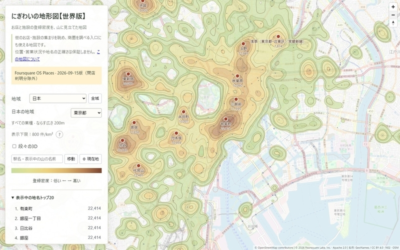

WindowsにQGISを入れてみた。Mapsukeはこれからだが、手元のGISを言葉で操作できるなら、コードに慣れていない人にも地図づくりの入口が広がりそうだ。Claude Codeでアプリを作るのとはまた違う使い方として、試してみたい。
私自身も、駅周辺のお店や施設の集まりを山のように見せる地図を作っている。AIで作りやすくなった一方、面白い地図にするには切り口が大切だと感じる。街が少し違って見えるような地図を、これからも作っていきたい。
本誌では、地図・位置情報・POIなどの地理空間データを、機械学習やデータサイエンスの手法で分析・活用する領域をGeoAIと呼びます
MIERUNEが10月14日、QGISをAIで操作する「Mapsuke」の基本・応用ガイドを公開しました。Claude CodeやCodex CLIを通じて、データの取得、集計、地図の色分け、印刷レイアウトの作成までをチャットで指示できます。応用ガイドでは、一連の処理をツールとして保存し、Mapsukeを使っていない人とも共有する方法を紹介しています。
対応はQGIS 3.44以降で、MCPサーバーの設定は不要ですが、AIサービス側の契約やAPIキーは必要です。AIが生成したコードはQGISと同じ権限で動くため、記事では慣れるまで実行前に確認するAskモードを勧めています。
opengeosが10月12日、Rustで開発したオープンソースGIS「RustGIS」の初版を公開しました。Windows・macOS・Linuxのデスクトップとブラウザーに対応し、地図表示や編集、空間分析、印刷用レイアウトなどを備えます。複数のAIサービスに対応するアシスタントも組み込まれ、AIとの対話をGISの作業に取り入れる構成です。初版のため、既存GISを置き換えられる成熟度かどうかは、今後の利用を通じて見極める段階です。
ジオテクノロジーズが10月13日、愛媛県伊方町で人流データとアンケートを組み合わせた観光調査の事例を発表しました。九州からの来訪者に対する調査では、回答者の43.7％が伊方町やその場所を知らないと回答し、実際の訪問と町の認知に隔たりが見られました。人がどこに来ているかに加え、何を知っているかを聞くことで、人流だけでは見えない課題を捉えています。調査を踏まえた情報発信や周遊施策も紹介されていますが、集客効果が実証されたという発表ではありません。
GeoNode 5.1が10月13日に公開され、位置情報を持たないCSVの登録や、位置情報付き文書の地図表示に対応しました。外部URLのCOG・FlatGeobufも扱え、地図データと関連資料を同じカタログにまとめやすくなっています。
Cesiumは10月12日、AIツールからCesium ionへ接続する公式MCPサーバーを公開しました。アカウント認証の上で、登録データの検索やタイル変換の状況確認、建物・設計データ内の要素の問い合わせなどを行えます。
LBMA Japanが10月13日に公開した第6版のカオスマップで、GeoAIが独立したカテゴリになりました。業界団体によるサービスの整理に、位置情報とAIの組み合わせが一つの分野として加わっています。
Esriは10月14日の告知で、前日に公開したArcGIS Server向け累積セキュリティパッチを案内し、早急な適用を強く推奨しました。脆弱性は6件、深刻度の指標CVSSの最大値は9.8で、影響するバージョンは項目ごとに異なるため、運用担当者は公式案内で対象を確認してください。
筆者が10月12日に公開した「にぎわいの地形図」は、Foursquare OS Placesの約1億件の登録から、お店や施設の密度を色・等高線・3Dの高さで表した地図です。関連作品の駅のにぎわいTier表から駅周辺も眺められますが、山の高さが示すのは登録密度で、実際の人出や売上ではありません。

東京周辺の「にぎわいの地形図」。実際の標高ではなく、POIの登録密度を地形のように表現しています。出典：筆者の記事。地図・データの帰属表示は画像内に記載。